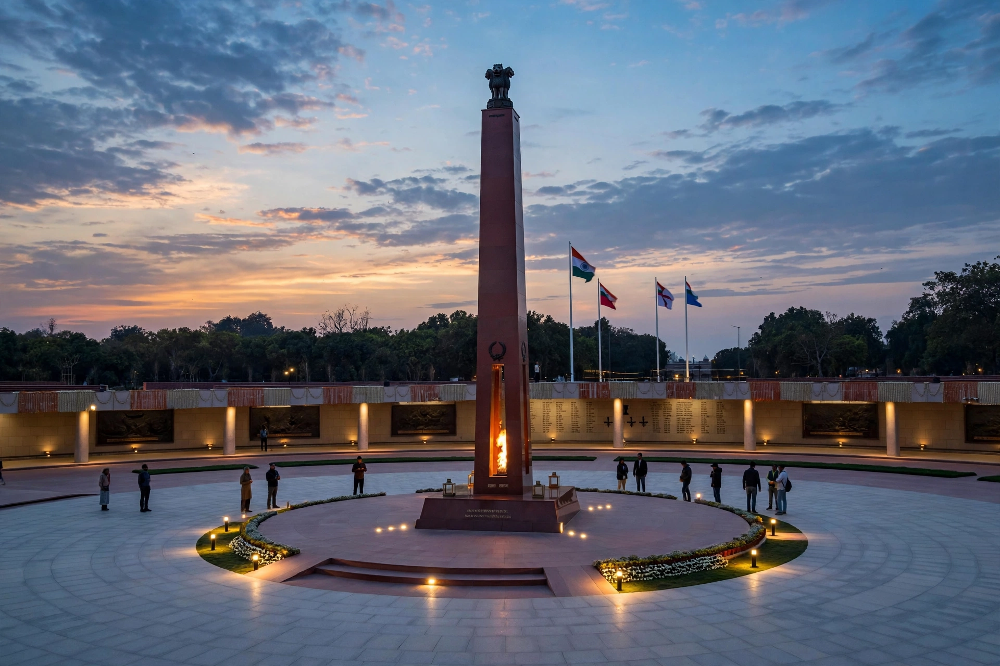

From Wikipedia, the free encyclopedia
| Location | C Hexagon, Rajpath, India Gate complex, New Delhi, India |
|---|---|
| Inaugurated | 25 February 2019 by Prime Minister Narendra Modi |
| Area | About 40 acres (16 ha) |
| Commemorates | Indian soldiers killed in wars and counter-insurgency operations since 1947 |

The National War Memorial (Hindi: राष्ट्रीय समर स्मारक, Rashtriya Samar Smaarak) is a national monument in New Delhi, India, built to honour and remember soldiers of the Indian Armed Forces who fought in armed conflicts involving India. It is located at the C Hexagon, Rajpath, surrounding the India Gate complex, and was inaugurated by Prime Minister Narendra Modi on 25 February 2019.
The memorial's central feature is the Chakravyuh, a circular formation of granite bricks inspired by the ancient Indian battle formation, at whose heart stands the Amar Chakra (Circle of Immortality) with an eternal flame. A 15.5-metre granite obelisk rises at its centre. The Tyag Chakra, the Wall of Sacrifice, bears the names of more than 26,000 fallen soldiers inscribed on granite bricks.
The complex includes the Param Yodha Sthal, a garden with busts of the 21 recipients of the Param Vir Chakra, India's highest military decoration, and the Veerta Chakra gallery depicting battles such as Gangasagar, Longewala, Tithwal, Rizang La, and the Battle of Tololing. Proposals for a national war memorial dated back to the 1960s, following the Sino-Indian War of 1962, but construction was only approved in 2015.